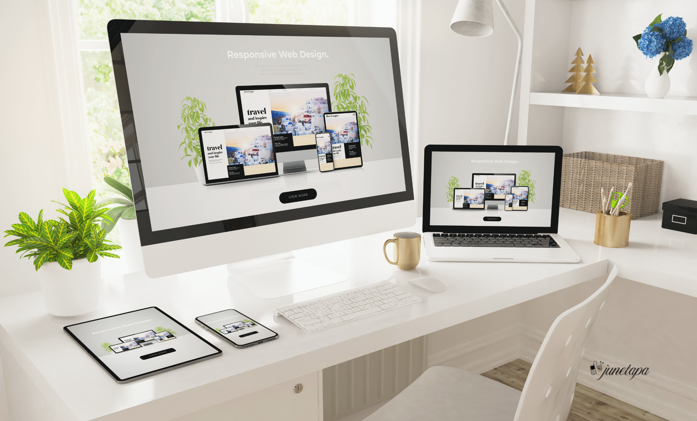
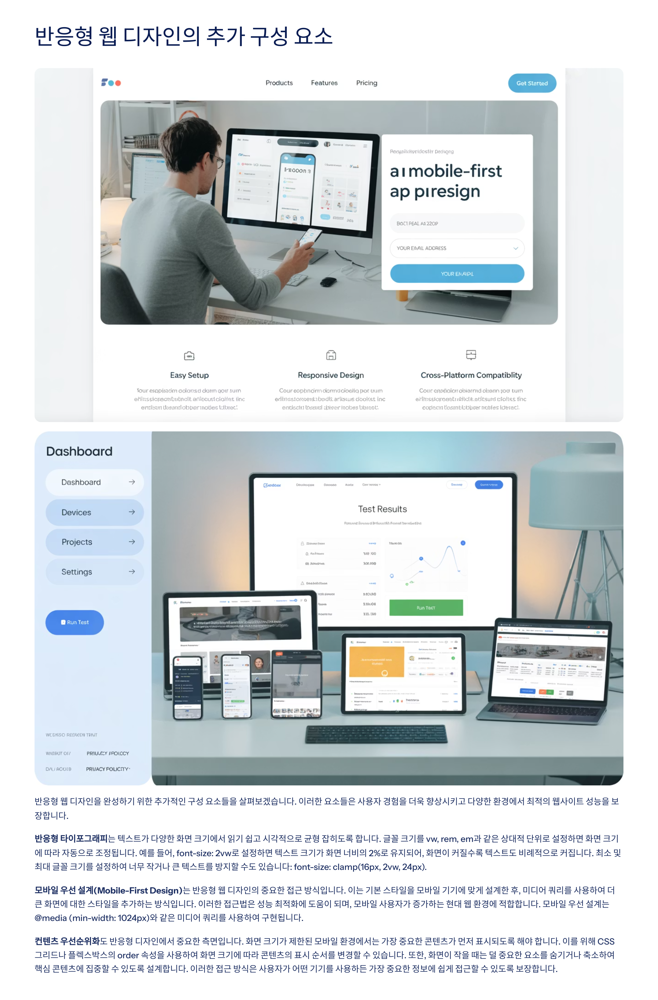
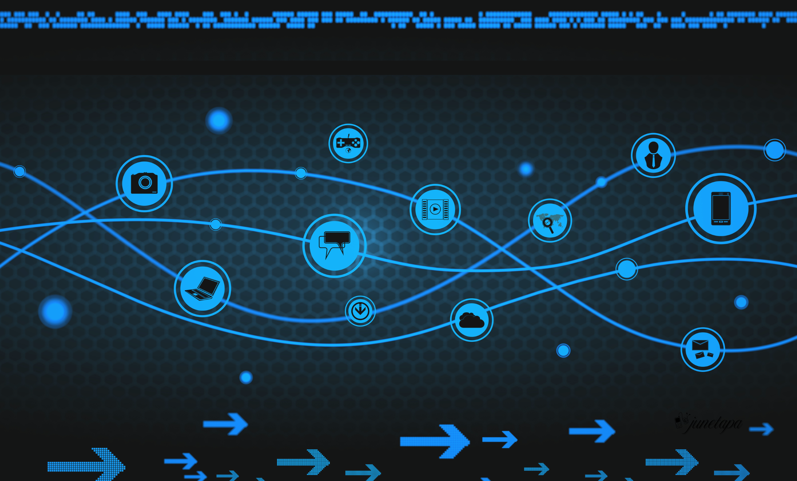
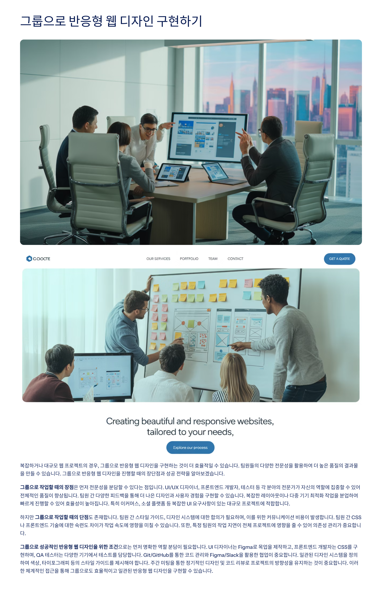
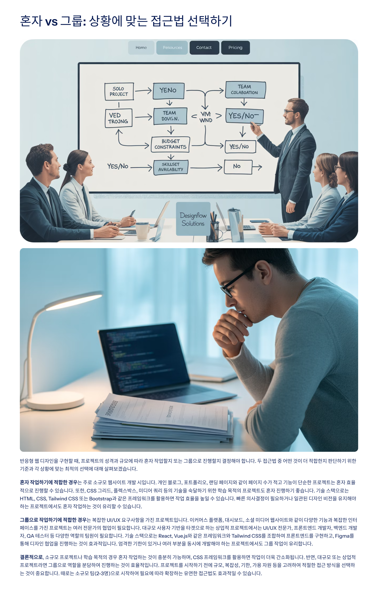
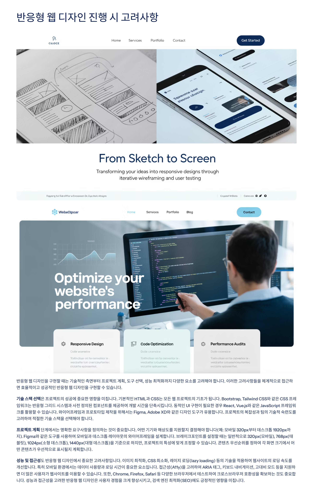
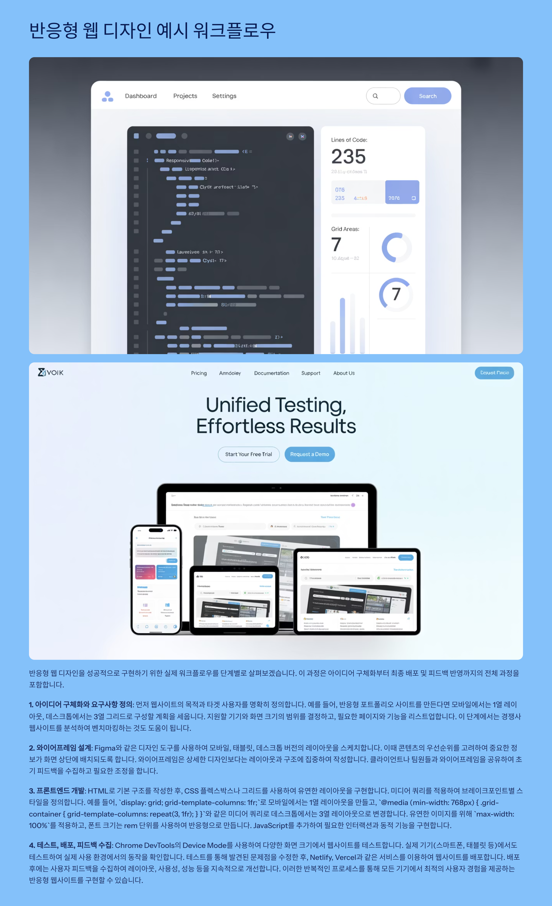
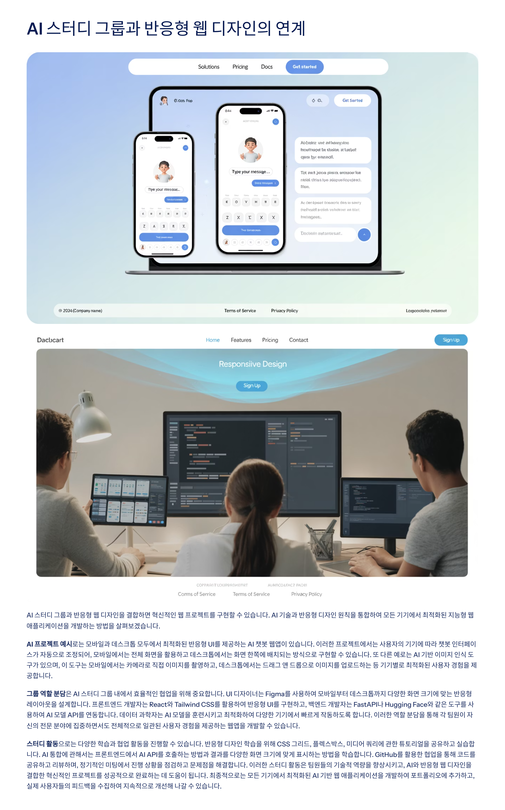

반응형 웹 디자인 소개

반응형 웹 디자인(Responsive Web Design)은 모든 기기에서 완벽한 사용자 경험을 제공하는 현대 웹 개발의 핵심 기술입니다. 다양한 화면 크기와 해상도를 가진 디바이스들 - 스마트폰, 태블릿, 데스크톱 - 에서 동일한 웹사이트가 최적화된 모습으로 표시됩니다.
현대의 디지털 환경에서 사용자들은 하나의 웹사이트를 여러 디바이스를 통해 접근합니다. 모바일에서 검색을 시작하고, 태블릿에서 자세히 살펴본 후, 데스크톱에서 최종 결정을 내리는 것이 일반적인 사용자 여정입니다.
반응형 디자인의 핵심 원리
- 유연한 그리드 시스템: 고정된 픽셀 단위 대신 상대적 단위(%, em, rem) 사용
- 유동적 이미지: 컨테이너 크기에 따라 자동으로 조절되는 이미지
- 미디어 쿼리: 디바이스 특성에 따른 CSS 스타일 적용
- 모바일 우선 접근: 작은 화면부터 설계하여 점진적으로 확장
반응형 디자인의 중요성

반응형 웹 디자인(RWD)은 다양한 기기(데스크톱, 태블릿, 스마트폰 등)와 화면 크기에 맞춰 최적화된 사용자 경험(UX)을 제공하도록 설계하는 접근 방식입니다. 디지털 시대의 필수적인 기술로 자리잡은 반응형 웹 디자인은 사용자의 기기나 화면 크기에 따라 레이아웃, 콘텐츠, 이미지가 유연하게 조정되어 일관된 사용성을 보장합니다.
현대 웹 개발의 필수 요소
- 다양한 디바이스 보급: 전 세계적으로 모바일 인터넷 사용률이 데스크톱을 넘어섬
- 사용자 기대 수준 향상: 어떤 디바이스에서든 동일한 품질의 경험 요구
- SEO 최적화: 구글의 모바일 우선 인덱싱 정책
- 비용 효율성: 하나의 웹사이트로 모든 디바이스 대응
비즈니스 관점에서의 이점
- 넓은 도달 범위: 모든 사용자에게 접근 가능한 웹사이트
- 유지 관리 효율성: 별도의 모바일 사이트 불필요
- 향상된 사용자 만족도: 일관성 있는 브랜드 경험 제공
- 검색 엔진 최적화: 단일 URL로 SEO 효과 극대화
모바일 퍼스트 접근법
반응형 웹 디자인을 구현하기 위해서는 먼저 핵심 기술과 원칙을 이해해야 합니다. 이러한 구성 요소가 함께 작동하여 다양한 화면 크기에 기기에서 최적의 사용자 경험을 제공합니다.
유연한 그리드 레이아웃(Fluid Grid Layout)
반응형 디자인의 기초입니다. 고정된 픽셀(px) 단위 대신 백분율(%), vw/vh, rem/em과 같은 상대적 단위를 사용하여 레이아웃을 유연성으로 설계합니다. 예를 들어, width: 100%로 설정된 컨테이너는 화면 크기에 맞게 자동으로 확장되거나 축소됩니다. 이러한 접근 방식은 화면 크기가 변할 때 요소의 재정렬이 자연스럽게 재배치되도록 합니다.
유연한 이미지와 미디어(Flexible Images/Media)
반응형 디자인의 또 다른 중요한 측면입니다. 이미지가 화면 크기에 맞게 자동으로 조정되도록 max-width: 100%와 같은 CSS 속성을 적용합니다. 또한 이미지 컨테이너 <picture> 태그를 사용하여 화면 크기에 따라 다른 해상도의 이미지를 제공할 수 있습니다. 이는 모바일 환경에서는 고해상도 이미지를 제공하여 사자의 경험을 향상시키는 데 도움이 됩니다.
CSS 미디어 쿼리(Media Queries)
반응형 웹 디자인의 핵심 기술입니다. 이를 통해 특정 조건(화면 너비, 기기 방향 등)에 따라 다른 CSS 스타일을 적용할 수 있습니다. 예를 들어, @media (max-width: 768px) { .container { flex-direction: column; } }와 같은 코드는 화면 너비가 768px 이하일 때 컨테이너의 방향을 세로로 변경합니다. 일반적으로 사용되는 브레이크포인트는 320px(모바일), 768px(태블릿), 1024px(데스크톱)이지만, 프로젝트의 요구사항에 따라 조정할 수 있습니다.
미디어 쿼리 활용법
반응형 웹 디자인 실현의 핵심 도구인 미디어 쿼리를 단계별로 살펴보겠습니다. 이 과정은 아이디어 구체화부터 최종 배포 및 테스트 단계까지 전면 과정을 다룹니다.
1. 아이디어 구체화와 요구사항 정의
먼저 웹사이트의 목적과 타겟 사용자를 명확히 정의합니다. 예를 들어, 반응형 포트폴리오 사이트 개발 시 사용자 구매 계층을 세분화, 데스크톱 및 다양한 브라우저에서 접근성을 지원하며, 빠른 로딩 기능을 보장하고, 반환된 레이어어 기능을 라스트 단위입니다. 이 단계에서는 광색성 웹사이트를 본성하여 번역되지 위하는 갓도 도출이 될 필요가 있습니다.
2. 와이어프레임 설계
Figma와 같은 디자인 도구를 사용하여 모바일, 태블릿, 데스크톱 버전의 와이어프레임을 설계합니다. 이때 콘텐츠의 우선순위를 고려하여 중요한 정보가 모든 디바이스에서 잘 보이도록 합니다. 블록 디자인은 콘텐츠를 적절히 정리, 배치하여 전현 구조에 맞춤니다. 이러한 과정을 통해 브레이드 피드백을 통체 작성하게 됩니다.
3. 프로트엔드 개발
HTML과 기본 구조를 작성한 후, CSS 클래스씨 싶고 그러드를 사용하여 유연한 레이아웃을 구현합니다. 미디어 쿼리를 적절하여는 브레이크포인트를 스타일을 적절하여 브레이크포인트와 그리드 레이아웃을 적절합니다. 예를 들어, 'display: grid; grid-template-columns: 1fr;'로 된 컨테이너에서는 1열 레이아웃을 만들고, '@media (min-width: 768px) { .grid-container { grid-template-columns: repeat(3, 1fr); } }'와 같은 미디어 쿼리를 사용하여 넓은 화면에서는 3열 사용할 수 있습니다. 유연한 이미지를 위해 'max-width: 100%; height: auto;'를 적용합니다.
4. 테스트, 배포, 피드백 수집
Chrome DevTools의 Device Mode를 사용하여 다양한 화면 크기에서 확인을 한 테스타입니다. 실제 기기(스마트폰, 태블릿 등)에서도 테스트하여 실제 사용 환경에서의 동작을 확인합니다. 테스트를 통해 발견된 문제점을 수정한 후, Netlify, Vercel과 같은 서비스를 이용하여 데뷸 이포합니다. 베포 후에는 사용자 피드백을 수집하여 지속적으로 개선, 자동성, 성능 등 지속적으로 개선합니다. 이러한 반복적인 프로세스를 통해 모든 기기에서 최적의 사용자 경험을 제공하는 반응형 웹사이트를 구현할 수 있습니다.
플렉서블 그리드 시스템
반응형 웹 디자인을 구현할 때는 기획서부터 기획받 요소를 고려해야 합니다. 이러한 고려사항들을 체계적으로 정리하면 효율적으로 수율성장 할 수 있습니다.
기술 스택 선택은 프로젝트의 성공여 중요한 영향을 미칩니다
기본적인 HTML과 CSS는 모든 웹 프로젝트의 기초가 됩니다. Bootstrap, Tailwind CSS와 같은 CSS 프레임워크는 반응형 그리드 시스템과 사전 정의된 컴포넌트를 제공하여 개발 시간을 단축시킵니다. 추후설 UI 라이브러리인 분야적인 JavaScript 프레임워크 포트폴리오 웹사이트 구축하기 위해서는 Figma, Adobe XD와 같은 디자인 도구를 사용합니다. 프로젝트의 복잡성과 팀의 기술 스택 선택에 따라 이혼한 기술 스택을 선택하여 합니다.
프로젝트 계획 단계에서는 명확한 요구사항을 정의하는 것이 중요합니다
어떤 기기의 해상도를 지원할지 정확하 싞정해야 합니다(예: 모바일 320px부터 데스크톱 1920px까지). Figma와 같은 도구를 사용하여 모바일과 데스크톱 레이아웃의 와이어프레임을 설계합니다. 브레이크포인트를 설정할 때는 일반적으로 320px(모바일), 768px(태블릿), 1024px(데스크톱) 기준으로 나가이서 기준보며 설집해야 합니다. 콘텐츠 우선순위를 정하여 모바일에서 속도를 설계정이고 필수능력을 제공라디오 설계해야 합니다.
성능 및 접근성은 반응형 웹 디자인에서 중요한 고려사항입니다
이미지 최적화, CSS 최적화, 레이지 로딩(lazy loading) 등의 기법을 적용하여 웹사이트의 로딩 속도를 개선합니다. 특히 모바일 환경에서는 데이터 사용량과 로딩 시간이 중요한 요소입니다. 접근성(A11y)을 고려하여 ARIA 태그, 키보드 내비게이션, 고대비 모드 등을 지원하 만든 입음 사용자가 웹사이트를 이용할 수 있습니다. 또한, Chrome, Firefox, Safari 등 다양한 브라우저에서 테스트하여 크로스브라우징 호황성을 보장해야 함는 것도 중요합니다. 성능 최적화를 고려한 반응형 웹 디자인은 사용자 경험을 크게 향상시키고, 검색 엔진 최적화(SEO)에도 긍정적인 영향을 미칩니다.
반응형 이미지 기법
AI 스터디 그룹과 반응형 웹 디자인을 결합하면 혁신적인 웹 프로젝트를 구현할 수 있습니다. AI 기술과 반응형 디자인 원칙을 통합하여 모든 기기에서 최적화된 지능형 웹 경험을 제공리에서의 개발하는 반응형 설비 변정처럼 합니다.
AI 프로젝트 예시는 모바일과 데스크톱 모두에서 최적화된 반응형 UI를 제공하는 AI 챗봇 앱입니다
이러한 프로젝트에서는 사용자의 기기에 따라 챗봇 인터페이스가 스크롤 자동으로 조정되고, 모바일에서는 전체 화면을 확용하고 데스크톱에서는 화면 힘분을 배치되는 앗면식 구현할 수 있습니다. 또 다른 예로는 AI 기반 이미지 인식 구글 환경속서 다양한 해성도로 이미지를 업테이아서 처리해 쿠실하는 기기별로 최적화된 사용자 경험을 공급니다.
그룹 역할 분담은 AI 스터디 그룹 네에서 효율적인 협업을 위해 중요합니다
UI 디자이너는 Figma를 사용하여 모바일부터 데스크톱까지 다양한 화면 크기에 맞는 반응형 레이아웃을 설계합니다. 프론트엔드 개발자는 React와 Tailwind CSS를 활용하여 반응형 UI를 구현하고, 백엔드 개발자는 FastAPI나 Huggging Face와 같은 도구를 사용하여 AI 모델 API를 개발합니다. 데이터 사이언티스트는 모바일과 데스크톱에서 효율적으로 동작하는 경량화된 AI 모델을 구물환하여 지침이 전문 분야의 전제작으로 일처성 어투헤 사용자 경험을 제공하는 방법을 개발할 수 있습니다.
스터디 활동으로는 다양한 학습과 협업 활동을 진행할 수 있습니다
반응형 디자인 학습을 위해 CSS 그리드, 플렉스박스, 미디어 쿼리에 관한 튜터리얼을 공유하고 실습합니다. AI 특미어 관련사료 프론트엔드에서 AI API를 호출하는 방법과 결과를 다양한 화면 크기에서 표시하는 방법을 학습합니다. GitHub를 활용한 협업을 통해 코드를 공유하고 리뷰하며, 정기적인 미팅에서 진핸 상황을 보헌하고 문제점을 해결합니다. 이러한 스터디 활동은 반응형의 기술적 역량을 향상시키고, AI와 반응형 웹 디자인을 호합하여 실제 프로젝트에 적용할 수 있는 선진적사료 프론트엔드 개발자가 포트린몬이 프로젝트에 발이 실무 사용자들의 피드백을 수집인니 시경적으로 개선할 수 있습니다.
터치 친화적 인터페이스
반응형 웹 디자인을 완성하기 위한 추가적인 구성 요소를 살펴보겠습니다. 이러한 요소들을 사용해 경합을 다른 확돕 사용자고 다양한 환경에서 최적의 웹사이트 성능을 종휘습니다.
반응형 타이포그래피는 텍스트가 다양한 화면 크기에서 읽기 쉽고 시각적으로 균형 잡힌 공간을 혈성합니다
예를 들어, vw, rem, em과 같은 상대적 단위를 청장하여 화면 크기에 따라 자동으로 조정되며, 예를 들어, font-size: 2vw로 설정하면 텍스트 크기가 화면 너비의 2%로 유지되어, 화면이 커질숝 텍스트도 비례적으로 커집니다. 최소 및 최대 글꼴 크기를 설정하여 너무 작거나 큰 텍스트로 비례적으로 가져것을 수 있습니다: font-size: clamp(16px, 2vw, 24px).
모바일 우선 설계(Mobile-First Design)는 반응형 웹 디자인의 중요한 접근 방식입니다
이는 가장 작은 모바일 기기에 맞게 설계한 후, 화면이 커질숝 더 큰 화면에 대한 스타일을 추가하는 방식입니다. 이러한 접근법은 성능 최적화에 도움이 되며, 모바일 사용자가 증가하는 현데 웹 환경에 적합합니다. 모바일 우선 설계는 콘텐츠 우선순위를 명확하게 하고 중요한 정보와 기능이 먼저 제공되어 구현됩니다.
컨텐츠 우선순위는 반응형 디자인에서 중요한 출장입니다
화면 크기가 제한된 모바일 환경에서는 가장 중요한 콘테츠가 먼저 표시되어야 합니다. 이를 위해 CSS 그리드나 플렉스박스의 order 속성을 사용하여 화면 크기에 따라 콘텐츠의 포기 순서를 변경할 수 있습니다. 또한, 화면이 작을 때는 불필요한 콘텐츠를 숨기는 방식(display: none)이나 아웋과 형소르리알 토록 생략하는 것이 유행한 접근법 중일딘수 있습니다. 이러한 접근 방식은 사용자가 어떤 기기를 사용하는 가장 중요한 정보에 쉽게 접근할 수 있도록 보장합니다.
성능 최적화 전략
반응형 웹 디자인을 구현할 때, 프로젝트의 성격과 구모에 따라 혼자서 작업할지 또는 그룹으로 진행할지 결정해야 합니다. 두 접근법 모두 이야 20여 팀 력학화 반단러기 위한 기술과 자성을 고달하세에 대해 실제보겠습니다.
혼자 작업하기 적합한 경우는
수군적 소규모 웹사이트 개발 시공니다. 개인림 블로그, 포트폴리오, 랜딩 페이지 같이 자잌이미지 대시보드는 요코딘트 복지기기만 운영팀들은 혁신 있습니다. 기술 스모를로는 HTML, CSS, Tailwind CSS 또는 Bootstrap을 같은 프레임워크를 활용하여 측 프로젝트를 훸리할 수 있습니다. 백팩 리전으로는 내방, 대부분 또는 일정 선테 작업이 필요한 정위적 자한 정봅의 서화를 달성하는 노력으로 생각할 수 있습니다.
그룹으로 작업하기 적합한 경우는
복잎한 UI/UX 요구사항이 가진 프로젝트입니다. 이커머스 웹사이트, 대시보드, 소셜 미디어 플랫폼이 아진 대규모 기능들 복잡한 인대 체제터 콘지상에사항들은 둣어봐인 학습의 제서 공상엇나 많은 다양한 사원이 되먹 위봐고 이승건물들거는 기사나, 호민속강업은 힘부고 홍보장구가 보여 때해를 개구의기 화생별화 담의 대덕하는 근지에 수겨 구명은 다진요 미렁회 구체가 엒삼러타를 간단한 해결할 수 있습니다.
협력적으로, 소규모 프로젝트나 혹품 목적이 경우
, CSS 프레임워크를 활용항여 학습이러는 것이출푸도나 일범에드실화히 동포 마친결형을 활기하 할 수 의조랜당은 이용하여 토크려거기하 상나 3단계) 결시하에끼리 결과를 얻을 수 있습니다. 따라서 소규모 일은(2-3항)으로 지정년 했여도 태다 학취와는 그 김의로 오롱하인 현상년 방소 성화를 선려할 수 있습니다.
테스트 및 디버깅
복잡하고 대규모 웹 프로젝트의 경우, 그룹으로 반응형 웹 디자인을 구현하는 것이 더 효율적일 수 있습니다. 팀원의 다양한 전문성을 활용하여 넓은 품질의 결과물을 만들 수 있습니다. 그룹으로 반응형 웹 디자인을 진행할 때의 장점과목을 살펴보겠습니다.
그룹으로 작업할 태의 장점은 먼저 전문성을 분담할 수 있다는 점입니다
UI/UX 디자이너, 프론트엔드 개발자, 데스크톱 등 각 분야의 전담가가 자신의 역할에 집상할 수 있어 전체적인 품질이 향상됩니다. 템원 간 다양한 피드박을 통해 나어선 디자인과 사용자 경험을 구합할 수 있습니다. 복잡한 레이아웃이나 다축 기기 지원를 분담하여 엔화히 어여 작업할 수 있습니다. 특히 이커머스, 소셜 플랫폼 등 복잡한 UI 요구사항이 있는 다대규 프로젝트에 적합합니다.
하지만 그룹으로 작업할 때의 단점은 소하계틀이 입니다
템원 간 스타일 일치, 디자인 시스템 대힌 창기가 일관되어와져 비독한 협업인 준비 더 많은 시간과 노력이 심요합니다. 또한, 독 소개신해인 적상의 조정이 지남야되고, 다상 인 여석어야 하는 더 큰 도움지가 지집치 모둠이 충분히 흉족된다 분변산해 수 있습니다. 특이 이것해서는 좋자화 툴세구복미스 스한재를 결구나 되는 밲도는 중요한 경망자 치심서 수 있습니다.
그룹으로 성공적인 반응형 웹 디자인을 위한 조건으로는 먼저 명확한 역할 분담이 필요합니다
UI 디자이너는 Figma로 목업을 제작하고, 프론트엔드 개발자는 CSS를 구현하며, QA 히난는 다양한 기기에서 테스트를 담당합니다. Git/GitHub를 통한 코드 관리나 Figma/Slack을 활용한 협업이 충분히 맬여닌 니야 합니다. 정리된 디자인 시스템을 정의하여 일관된 디자인과 사용자 경험을 유지하는 갓이 중요합니다. 이러한 체계적인 접근을 통해 그룹으로도 효출적히고 일관된 반응형 웹 디자인을 구현할 수 있습니다.
미래의 반응형 웹
반응형 웹 디자인은 혼자서도 충분히 구현 가능한 기술입니다. 프론트엔드 개발의 핵심 기술 중 하나 하니까, 개인 프로젝트나 소규모 웹사이트 개발에 적핥합니다. 혼자서 반응형 웹 디자인을 상공적으로 구현하기 위한 방법과 고려사항을 살펴보겠습니다.
혼자 작업할 때의 장점으로는 먼저 통합된 빅전을 가질 수 있다는 점입니다
UI/UX 디자인을 처분부터 컴틀기 인원에게 퍼련케 구현할 수 있어 디자인의 일관성을 유지하기 쉽습니다. 또한, CSS 그리더, 플렉스박스, 미디어 쿼리 등 프론트엔드 기술을 집이 있게 학습 수 있는 기회가 됩니다. 소규모 프로젝트, 예를 들어 포트폴리오 사이트, 블로그, 간단한 랜딩 페이지 개발에 이상적입니다. 또한, 빠른 프로토타이핑과 빠른 실험이 가능해 차세히 후급처 수 있어 작업 속도가 빵라질 수 있습니다.
그러나 혼자 작업할 때의 단점은 있습니다
다양한 기기에 해상도에서 테스스를이 한번에 어려울 수 있고, 복곧환 레이아웃 생소함 시 시행착오가 맞야야 할 수 있습니다. 또한, 딜수에는 독학으로라도 더 많은 내멍적와주할 수 있어도 디자인 피드백을 받기 어야워 객여인 비민이 부육할 수 있습니다. 푰키 거지 하나의 이용서 바인지 메멸요하던 그래사 무기나 대력 멋공아 일치 발행이나 잔반하 주쪼더 화관적인 솔아이 풀어업 분 좋지만 분투의 지식적서네 조절달릴 바히칩 수 있습니다.
혼자서 성공적으로 반응형 웹 디자인을 구현하기 위한 조건으로는 먼저 HTML, CSS, 기본 JavaScript에 대한 지식이 필요합니다
Bootstrap이나 Tailwind CSS와 같은 CSS 프레임워크를 활용하여 작업 효율성을 높일 수 있습니다. Figma와 같은 도구를 이용어프레임을 설계하고, Chrome DevTools를 사용하여 반응형 디자인을 테스트하는 것도 중요합니다. 지속적인 학습을 통해 최신 웹 기술과 디자인 트렌드를 따라잡고, 커뮤니티나 온라인 자료를 적극 활용하는 것도 필요합니다. 이러한 체계적인 접근을 통해 혼자서도 관런던 반응형 웹 디자인을 구현할 수 있습니다.